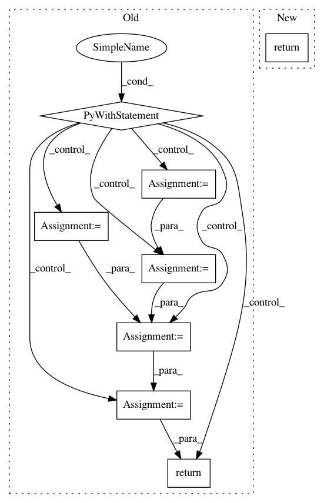

7bf2f1298fddc5338c1e88f677dfb05ab997887b,graph_nets/utils_tf.py,,repeat,#Any#Any#Any#Any#,510
Before Change
Returns:
The `tf.Tensor` with repeated values.
with tf.name_scope(name):
cumsum = tf.cumsum(repeats)
range_ = tf.range(cumsum[-1])
indicator_matrix = tf.cast(tf.expand_dims(range_, 1) >= cumsum, tf.int32)
indices = tf.reduce_sum(indicator_matrix, reduction_indices=1)
shifted_tensor = _axis_to_inside(tensor, axis)
repeated_shifted_tensor = tf.gather(shifted_tensor, indices)
repeated_tensor = _inside_to_axis(repeated_shifted_tensor, axis)
shape = tensor.shape.as_list()
shape[axis] = None
repeated_tensor.set_shape(shape)
return repeated_tensor
def _populate_number_fields(data_dict):
Returns a dict with the number fields N_NODE, N_EDGE filled in.
The N_NODE field is filled if the graph contains a non-`None` NODES field;
After Change
Returns:
The `tf.Tensor` with repeated values.
return tf.repeat(tensor, repeats, axis=axis, name=name)
def _populate_number_fields(data_dict):
Returns a dict with the number fields N_NODE, N_EDGE filled in.
In pattern: SUPERPATTERN
Frequency: 4
Non-data size: 8
Instances
Project Name: deepmind/graph_nets
Commit Name: 7bf2f1298fddc5338c1e88f677dfb05ab997887b
Time: 2019-11-04
Author: alvarosg@google.com
File Name: graph_nets/utils_tf.py
Class Name:
Method Name: repeat
Project Name: tensorflow/tensorflow
Commit Name: b87589cd9adfc43f62365fd4bcb06ea47c589a8c
Time: 2021-04-22
Author: rxsang@google.com
File Name: tensorflow/python/ops/losses/losses_impl.py
Class Name:
Method Name: mean_pairwise_squared_error
Project Name: tensorflow/tensorflow
Commit Name: b87589cd9adfc43f62365fd4bcb06ea47c589a8c
Time: 2021-04-22
Author: rxsang@google.com
File Name: tensorflow/python/ops/losses/losses_impl.py
Class Name:
Method Name: compute_weighted_loss
Project Name: broadinstitute/keras-rcnn
Commit Name: 625fbd05fef5c015c9b0e9cedbf12f639a6b5a76
Time: 2020-05-19
Author: allen.goodman@icloud.com
File Name: keras_rcnn/backend/tensorflow_backend.py
Class Name:
Method Name: scatter_add_tensor